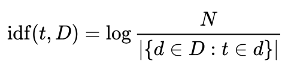

IS 596 / A2
Assignment 2: Tweets Sentiment Analysis
Sentiment analysis (or opinion mining) is a fundamental text mining technique in natural language processing that aims to computationally identify people's opinions, sentiments or emotions from textual data. Sentiment analysis has a wide range of real-world applications, such as product review monitoring, presidential election forecasting, and stock price prediction.
In this assignment, you will learn how to build your own sentiment analysis tool and use it to determine a tweet's sentiment.
Objectives:
Extract features from tweets using TF-IDF measurement.
Train a logistic regression classification model to predict the sentiment of a tweet using the TF-IDF-based features.
Note: This programming assignment requires Python 3.6 or later*. You can download Python from Python Download and find more information about Python from www.python.org.
* If you use other versions of Python (i.e., other than 3.6), please make sure your code runs correctly and specify the version number of your Python in the README file you turn in.
Introduction to Sentiment Analysis:
Sentiment is an estimate of the emotion/attitude expressed in a piece of text (e.g., tweet). Recent advances of machine learning algorithms have greatly facilitated the performance of sentiment analysis in classifying sentiments with quantitative features of the documents.
In this assignment, we will focus on predicting the sentiment (i.e., positive/negative) of an arbitrary tweet by training a machine learning classifier using the TF-IDF statistics computed from the raw text.
Introduction to TF-IDF:
Term Frequency - Inverse Document Frequency (TF-IDF) is an effective technique for quantifying the importance of a word in a text document. TF-IDF is measured as a product of term frequency (tf(t,d)) and inverse document frequency (idf(t,D)). In particular, term frequency is frequency of term t (e.g., a word) in document d (e.g., a tweet), and is defined as:

where ft,d is the number of times that term t occurs in document d.
Inverse document frequency is a measure of how much information the word provides across all documents. Formally, inverse document frequency is defined as:

where N is the total number of documents, |{d ∈ D: t ∈ d}| is the number of documents where the term t appears. (Note: To avoid division-by-zero issue caused by out-of-vocabulary terms, it is common to adjust the denominator in idf(t, D) to 1+|{d ∈ D: t ∈ d}|.) Intuitively, a high weight in TF-IDF means a high term frequency (in the given document) and a low document frequency of the term in the whole collection of documents.
More information about TF-IDF can be found here.
Text Representation with TF-IDF:
A collection of raw documents (e.g., tweets) can be converted to a matrix of TF-IDF features (denoted as TF-IDF representation). For example, suppose we have two short documents:
documentA = 'the man went out for a walk'
documentB = 'the children sat around the fire'
The frequency of each term is shown as follows:
After computing the TF-IDF score of each term in the corpus, the two documents can be represented in a fixed-length vector as below.
The TF-IDF representation can then be fitted to a machine learning model to classify the sentiment of each document.
Exercises:
In this assignment, we provide a Twitter dataset of 10000 tweets (download). The dataset has been split into a training set (tweets_train.csv), a validation set (tweets_validation.csv), and a testing set (tweets_test.csv). Both the training and validation sets contain the ground-truth label of the sentiment of each tweet. You will train a logistic regression classifier based on the ground truth label and submit your prediction results on the testing set.
In particular, you will need to:
- Implementing a function to compute the TF-IDF score of each term in the training set.
- Implementing a function to generate the TF-IDF representation of a tweet using the document frequency computed above. (Note: you may also need to pre-process the raw tweets by lowercasing the text, removing stop words/numbers/mentions/URLs/special characters, lemmatizing words.)
- Using the TF-IDF representation of each tweet to train a logistic regression classifier and predict the binary sentiment (i.e., positive/negative) of each tweet in the testing set. (Note: you may use existing libraries (e.g., sklearn) to normalize the TF-IDF representation and train your model.)
What to Turn In:
- A csv file that contains the prediction results (i.e., storing your binary prediction results as a column in tweets_test.csv).
- The source code to finish these tasks.
Where to Turn In:
Upload your work in a .zip or .tar.gz file to Canvas under Assignments/Assignment 2.
Deadline:
This assignment is due at the beginning of class on Monday, Oct 4.